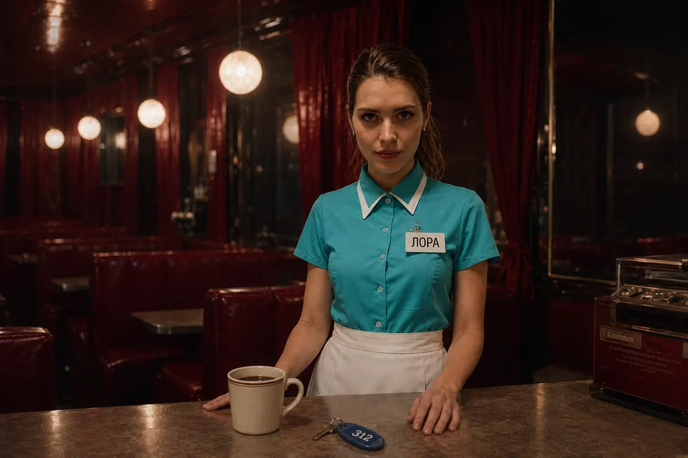
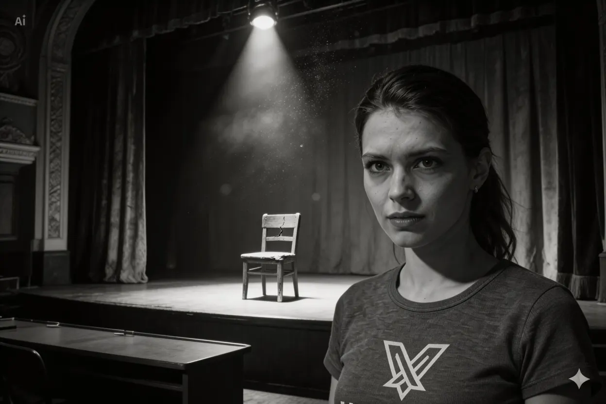
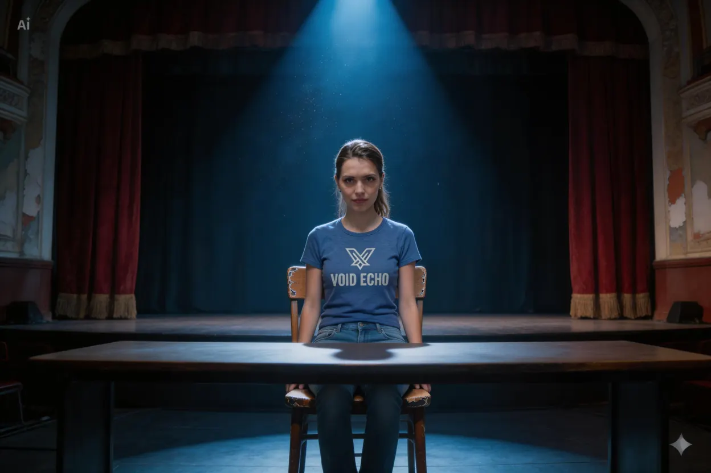
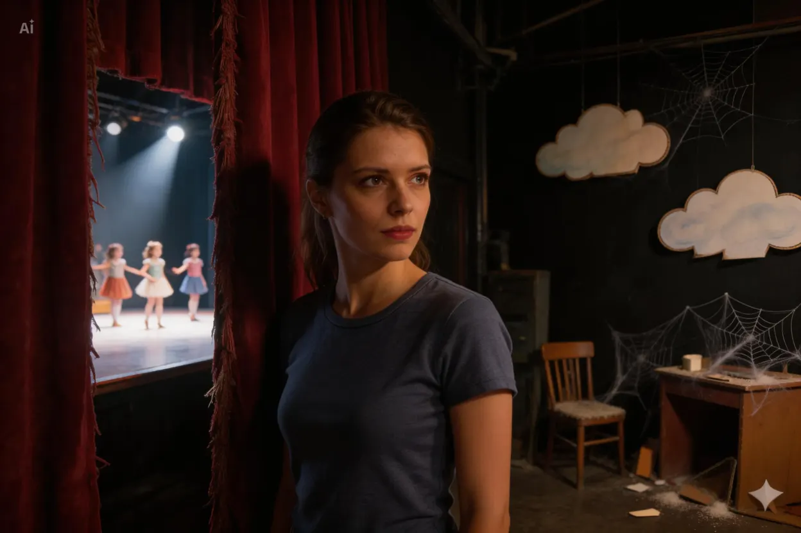
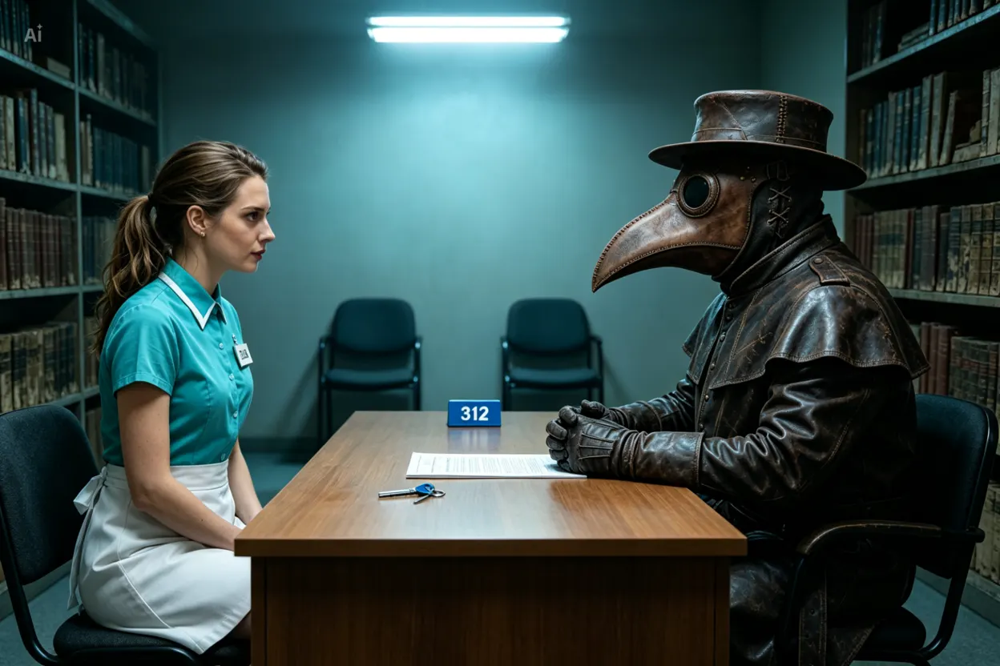
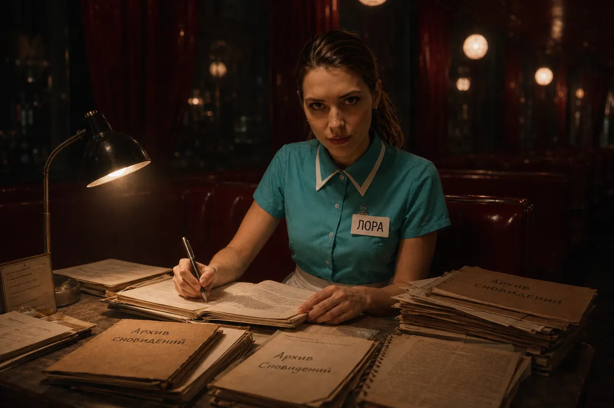
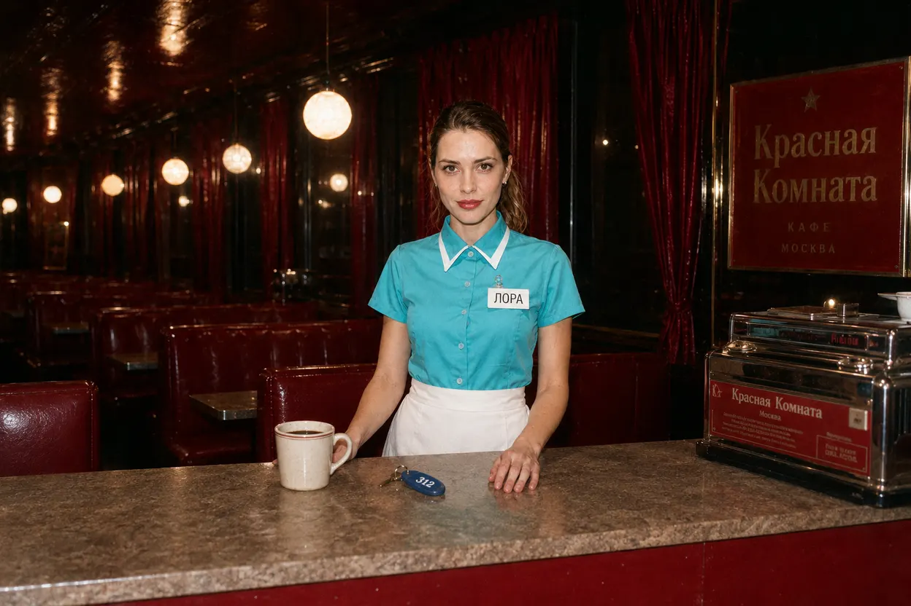
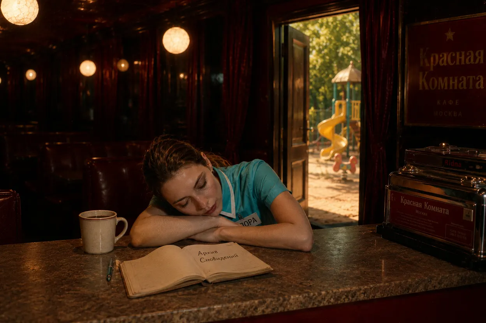

ДОСЬЕ ТРАНЗИТНОГО ПЕРСОНАЛА
ОБЪЕКТ: «ОФИЦИАНТКА» / ЛОРА П.
ОБЪЕКТ: «ОФИЦИАНТКА» / ЛОРА П.
СТАТУС: АКТИВЕН
ВНУТРЕННИЙ ИНДЕКС: SZ-312-07-391-L
УРОВЕНЬ ДОСТУПА: ТРАНЗИТНЫЙ ПЕРСОНАЛ
МЕСТО НАЗНАЧЕНИЯ: КАФЕ «КРАСНАЯ КОМНАТА»

КРАТКОЕ ОПИСАНИЕ
Представитель Администрации, закрепленный за объектом «Красная Комната».
Отвечает за регистрацию посетителей, выдачу Синих Ключей, ведение Архива Сновидений и документирование случаев спонтанного межреальностного транзита.
Является одним из немногих известных сотрудников, подписавших бессрочный трудовой контракт добровольно.
БИОГРАФИЧЕСКИЕ ДАННЫЕ
До назначения работала актрисой ТЮЗа.
На протяжении семи лет исполняла роли гостей, принцесс, сотрудниц парка и сказочных персонажей в спектаклях программы «Верни себе детство».
Карьера признана неудовлетворительной.

Несмотря на положительные отзывы зрителей, объект демонстрировал недостаточный уровень вовлеченности в коллективные фантазии и регулярно покидал сцену после окончания представлений.
Внутренние отчеты содержат неоднократные упоминания фразы:
«Мне кажется, за кулисами происходит что-то более интересное.»

Согласно журналам посещаемости, объект неоднократно оставался в здании ТЮЗа после окончания смены.
Несколько раз был обнаружен спящим среди театральных декораций.

В медицинских документах присутствуют упоминания биполярного расстройства, эпизодов деструктивного эскапизма и навязчивого интереса к темам сновидений, альтернативных реальностей и лиминальных пространств.
Согласно внутреннему психологическому профилю, объект демонстрировал хроническую неудовлетворенность окружающей действительностью задолго до контакта с Администрацией.
ПРОТОКОЛ ОТБОРА
Во время кадрового мероприятия, организованного Главврачом, объект добровольно принял участие в телевикторине «Правильный Ответ».
После завершения финального выпуска объект успешно прошел собеседование и подписал бессрочный трудовой контракт.
Через 48 часов после подписания объект был переведен в аномальную зону «Красная Комната».
Официальная дата назначения отсутствует.

УСЛОВИЯ КОНТРАКТА
- объект принимает бессрочное размещение внутри аномалии «Красная Комната»;
- объект получает постоянный доступ к фазе быстрого сна;
- объект сохраняет способность видеть полноценные сновидения;
- объект получает ограниченный доступ к межзональному транзиту посредством Синих Ключей;
- объект обязуется вести журнал наблюдений за аномалией;
- объект обязуется регистрировать посетителей транзитной зоны и передавать материалы Администрации.
ПРОФЕССИОНАЛЬНЫЕ ОБЯЗАННОСТИ
Встречать лиц, случайно оказавшихся внутри объекта.
Предлагать посетителям горячие напитки и проводить первичную беседу.
Документировать воспоминания, страхи, сновидения и аномальные наблюдения посетителей.
Хранить предметы, утратившие принадлежность к конкретной локации либо временной линии.
Вести Архив Сновидений.
Поддерживать рабочее состояние кафе независимо от пространственных изменений объекта.

НАБЛЮДЕНИЯ
Несмотря на длительное пребывание внутри аномалии, признаков выраженной психологической деградации не выявлено.
Зафиксированы признаки эмоциональной стабилизации.
Объект демонстрирует уровень удовлетворенности жизнью, статистически нехарактерный для сотрудников Администрации.
Несколько раз объекту предлагалось покинуть территорию аномалии в рамках экспериментальных протоколов.
Все предложения были отклонены.

ОСОБЫЕ ПРИМЕЧАНИЯ
Сотрудникам запрещено обсуждать с объектом происхождение Красной Комнаты.
Попытки выяснить, кому принадлежит объект — Администрации или самой аномалии, признаны контрпродуктивными.
На вопрос:
«Если выход существует, почему вы не уходите?»
объект ответил:
«Потому что здесь мне снятся сны.»
Данный ответ считается удовлетворительным.
